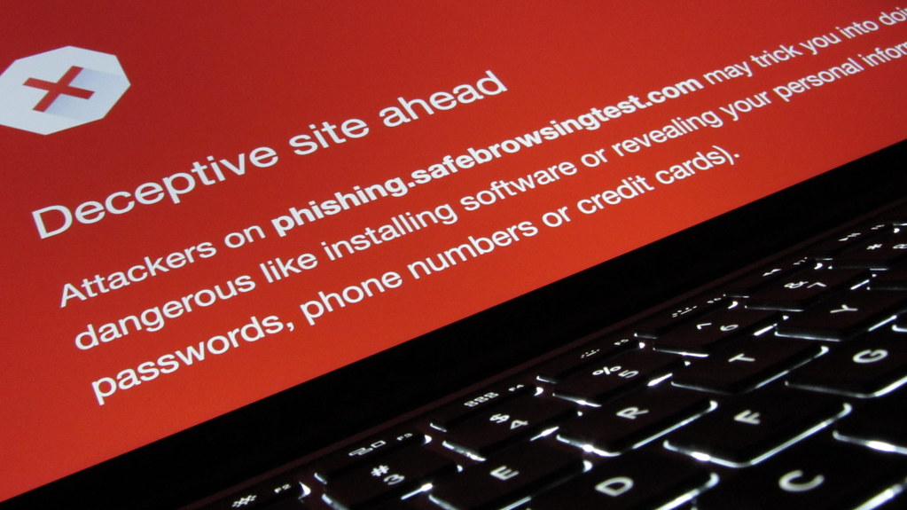
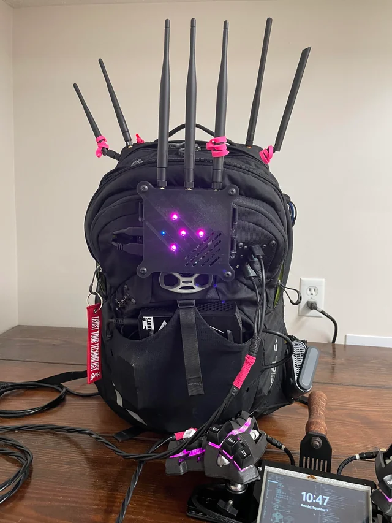

Security Awareness for Middle Management
Slide 1: What is Information?
Information is anything of value to your organization:
- Intellectual property (e.g., engineering designs)
- Business contacts (internal or external)
- Access credentials (keys, access cards, passwords, cryptographic keys)
Why it matters: Loss of sensitive information can disrupt operations, cause reputational damage, and lead to legal exposure. Unlike physical theft, data breaches often go unnoticed which can cause long-term harm.
What is your role:
- Identify what information your team handles that is sensitive
- Ensure appropriate protection measures are in place
- Promote awareness among team members
Note:
How do we lose data, by not properly managing it, data that the
company owns and holds valuable should not leave company property, e.g.,
it is not allowed to create personal backups of company data on personal
data carriers; this includes business contacts.
Access credentials should be secure, meaning they are not shared or
reused.
Accounts should be linked to a single natural person that has an active
contract with the company, furthermore think about setting up end dates
that match with contract end dates. Access cards: keep in mind that most
access cards currently being used are broken, and have been broken for
decades, they are trivial to copy digitally impossible to distinguish
from the real one
How do we make sure we don’t lose these things, classify our data ensure employee contracts have NDA’s and that company data is not allowed to leave company property, e.g., laptop, phones
Slide 2: Information Security Landscape
What you should know:
- Different countries have different laws on information security
- If your company deals with other countries, it is your responsibility to make sure you are compliant with regulations
- Regulations like Malaysia’s PDPA require proper handling of personal data
- Cybersecurity is no longer just an IT issue — it’s a business risk
Your role:
- Stay informed on applicable laws and policies
- Align team practices with company-wide security requirements
Slide 3: Background Checks
Why it’s relevant: Employees with access to critical systems or data must be vetted to avoid internal threats.
Typical checks include:
- Police and criminal background
- Credit history (where relevant)
- Previous employment verification
Your role:
- Ensure background checks are completed for your team
- Evaluate roles for access risks
Slide 4: Passwords
Common issues:
- Password reuse across platforms
- Weak passwords easily guessed or cracked
Best practices:
- Use unique, strong passwords
- Encourage use of password managers
- Enable multifactor authentication (MFA)
** counter security **
- contrary to what some have been told, frequent password changes have been found to have a negative effect on password security because it actually pushes people to create insecure passwords
Your role:
- Set the expectation for strong password practices
- Lead by example
Slide 5: Email Security

Threats:
- Phishing attempts
- Malicious attachments
- Social engineering through email
Your role:
- Encourage staff to verify suspicious emails
- Report phishing attempts to IT/security teams
- Avoid forwarding sensitive data through email
Slide 6: Phishing Awareness

How to spot phishing:
- Mismatched sender names and email addresses
- Urgent or threatening language
- Unexpected links or attachments
Your role:
- Foster a culture of ‘think before you click’
- Promote internal reporting of suspicious emails
Slide 7: Network Access

Wired networks:
Physical network ports in offices should be secured. Guest access to wired connections should not be allowed, as it bypasses Wi-Fi security controls.
Wireless networks:
Wi-Fi credentials should be updated when an employee leaves the company
For stronger security, use enterprise-grade Wi-Fi with RADIUS authentication, which allows individual user credentials instead of a shared password
Your role:
Ensure that visitor and contractor access is isolated from internal systems
Coordinate with IT to verify network access controls align with security policies
Slide 8: Identify risks
What are risks, risks can be anything that causes harm to the company, its employees or visitors, costs the company money, causes the money to lose business or reputation.
We deal with risks every day at almost any time, but if we learn to identify these risks we can deal with them before they happen
Note:
The most important thing to remember is that risks are not a problem
for department-x, they are a problem for the company.
Therefore, it is advisable to have the entire company be able to
identify risks for every department, not just their own.
ToDo: implement Kai-zen 改 kai - change 善 zen - good,
incentivize by giving a monetary reward.